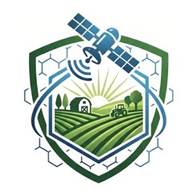
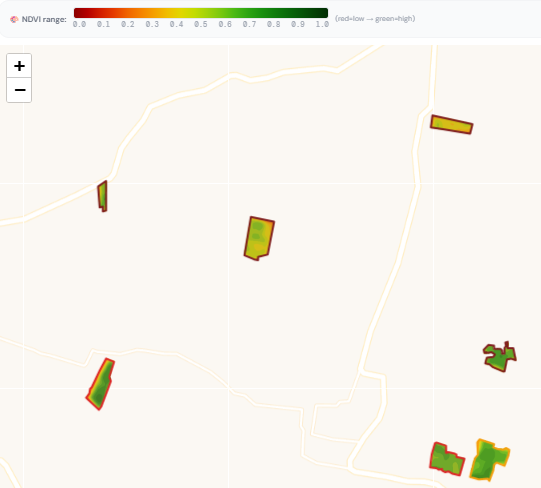
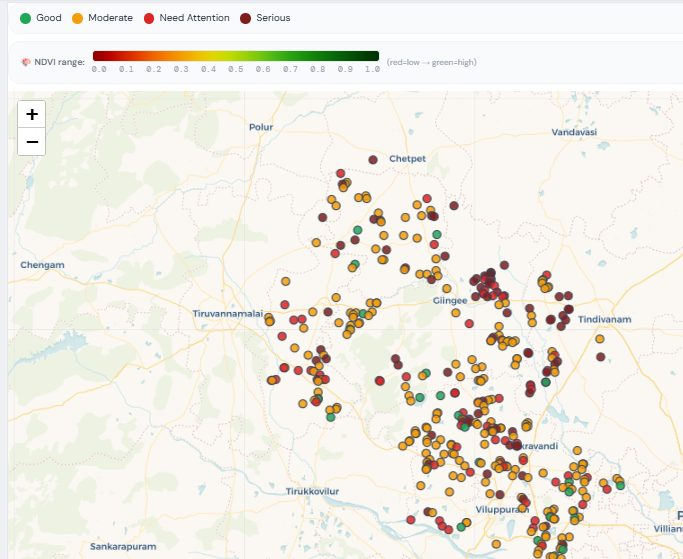
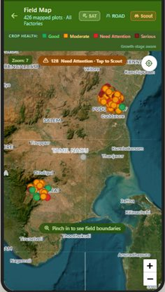
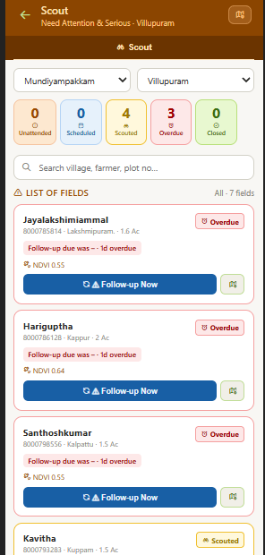
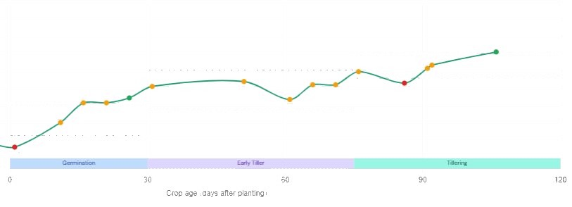
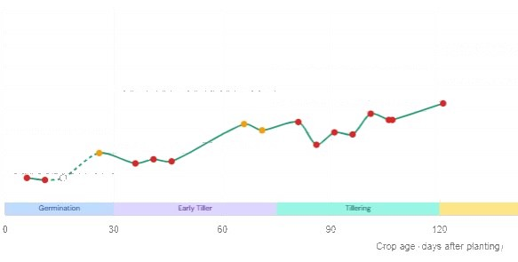
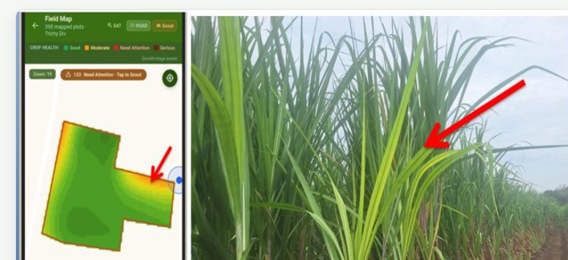

Satellite monitoring
Multi-satellite crop health assessment
Soil2Smile
Right information, at the right time — for mills, field officers, and the growers they serve.
No new hardware to start — plot boundaries in, field intelligence out.

Flagship productAccurate, timely, field-level crop intelligence — from satellite pass to agronomy recommendation. Built with growers and field officers so what’s on screen matches what happens on the ground.

One operating loop for sugarcane crop health — monitor, alert, verify, act.
Multi-satellite crop health assessment
Deviations from validated thresholds
Geo-tagged observations with the mobile app
Actionable corrective recommendations
Real-time insights for mill and field
See coverage-wide health, prioritize scarce officer time, and track recovery after interventions.
Visit the plots that need attention, capture geo-tagged proof, and close the loop faster.
Get stage-aware guidance so inputs and irrigation follow crop need, not calendar habit.
The same field-health picture — management dashboard at the office, scouting app in the field.





No new hardware and no blanket surveys required to start — plot boundaries are enough.
Multi-satellite data acquisition
Vigor & stress analytics
Index threshold deviations
Geo-tagged field visits
Corrective recommendations
Realtime insights & reports
Left: satellite health on the field map. Right: the scout’s ground photo of the same stressed zone.

Early detection means timely intervention and improved yields, season over season.
Visits directed by data instead of routine — more impact per visit, per officer.
Farmers and factory working from the same field health view, building trust over time.
Soil2Smile is a precision-agriculture company. We make satellite and remote-sensing data usable for people who work the land — growers, field officers, and the mills that depend on a healthy crop.
FarmSignal is our flagship product, refined season by season with the teams using it in sugarcane programs.